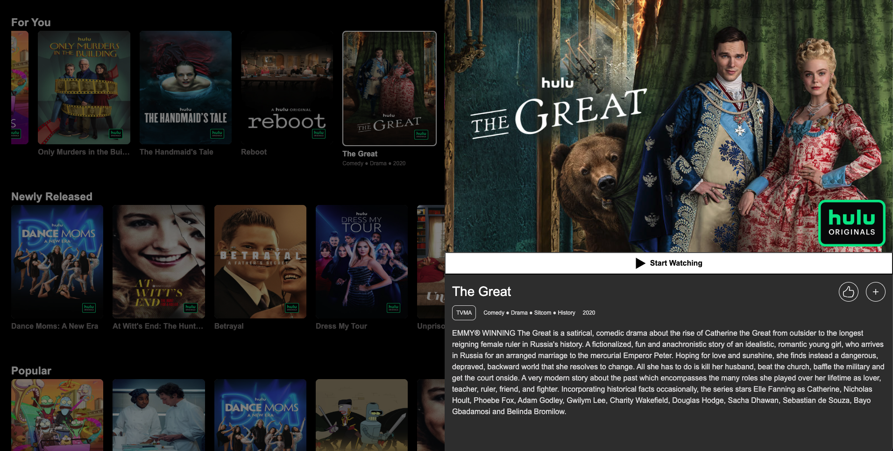

hulu - v1.0.0
Hulu Take-Home Assignment
First and foremost, I want to thank the team and the hiring manager for this opportunity. This assignment allowed me to revisit vanilla JavaScript implementation, and it was an enjoyable journey to refine my core JS skills.
My goal was to meet all the requirements while addressing most of the extra credit items within a shorter-than-average timeframe. While I was unable to implement dynamic collection fetching as the user scrolls closer to the viewport, this leaves room for improvement, which could be discussed in a future meeting (if applicable).
📌 Agenda
| Section | Description |
|---|---|
| Demo | Link to the live demo and screenshots |
| Technology | Overview of the tech stack used |
| Features | Highlight of implemented features |
| Design Implementation | Explanation of key components |
| Limitations & Areas for Improvement | Identified challenges and potential enhancements |
| Summary | Final thoughts and reflections |
Demo
Horizontal Layout

Vertical Layout

Entity Details

Technology
As per the requirements, no third-party frameworks or libraries were used. Instead, I leveraged native browser-supported features to build the application. Specifically, I utilized Web Components (custom elements), as they provide a maintainable, modular, and reusable approach.
Why Web Components?
- Maintainability: A clean separation of concerns, making components self-contained.
- Reusability: Components like the Tile View and Modal leverage the same Image component.
- Native Browser Support: Ensures lightweight, dependency-free execution.
A look at the package.json file will show no dependencies other than development dependencies for Webpack (build/runtime). The project solely utilizes HTML, TypeScript, and CSS.
Features
- Navigation – Users can navigate tiles both vertically and horizontally using the keyboard.
- Smooth Loading Experience – A shimmer effect provides feedback before images fully load.
- Layout Flexibility – Users can toggle between horizontal and vertical tile layouts.
- Watermark Support – Some tiles include branding/watermarks based on API data.
- Smooth Transitions – Selecting a tile smoothly transitions to a detailed modal view.
- Hulu Magic Load Time – All collections and tiles are preloaded at the start to ensure instant navigation.
- Thorough Accessibility (A11Y) – Accessibility is a critical part of this use case.
- Followed WCAG (Web Content Accessibility Guidelines) to improve keyboard and screen reader support.
- Implemented ARIA attributes (
aria-selected,aria-label,role="button", etc.) for better accessibility. - Used semantic HTML elements (
h2,button,list, etc.) for screen readers. - Ensured full keyboard navigability using
tabindexand keyboard event handling (Enter,Space). - Focus management ensures that when a tile is selected, it is properly focused for seamless navigation.
Design Implementation
Each component is documented with JSDoc, but here is a high-level overview of the implementation:
Components
Collections
- Fetches all collection data from the main API at initial load.
- Iteratively loads more data for individual Tile components.
- Each collection is independent, ensuring better performance when navigating horizontally.
Tiles
- Renders individual movies/shows within a collection.
- Supports selection, branding, and smooth transitions.
Image
- Handles lazy loading and smooth transitions.
- Reused in both the Tile and Modal components.
Modal
- Displays detailed metadata about the selected tile.
Limitations & Areas for Improvement
While the application provides smooth interactions and a good user experience, there are a few areas that could be improved:
1. Navigation & Scrolling
- Issue: When navigating vertically, the next selected tile must be aligned parallel to the previous tile.
- Current Approach: The app currently selects the next tile using the old collection index.
- Better Approach: Instead of relying on indexes, dynamically calculate the new selected tile’s position within the viewport to maintain alignment.
2. Dynamic Data Fetching vs. Initial Load Time
- Issue: The application fetches all data on initial load, increasing load time.
- Current Approach: Loads everything at startup, which ensures instant navigation but may introduce longer wait times before the UI is interactive.
- Better Approach: Implement lazy loading – fetch collections as the user scrolls closer while displaying a shimmering effect for better UX.
3. Scrolling Experience
- Issue: Scrolling behavior needs further refinements to feel more seamless.
- Current Approach: Used ChatGPT-generated smooth scroll behavior for vertical navigation.
- Better Approach: Fine-tune native smooth scrolling with custom easing functions.
4. Logo Image Handling
- Issue: The API does not specify logo sizes, resulting in inconsistent margins/padding.
- Current Approach: Pre-downloaded the Hulu logo and manually attached it to branded tiles.
- Better Approach: Dynamically adjust logo dimensions based on tile size.
5. Error Handling
- Issue: Currently, errors are only logged to the console, making debugging difficult for non-developers.
- Current Approach: Errors are printed to the browser console, providing minimal visibility to users.
- Better Approach: Implement in-app error UI notifications, such as:
- A toast notification when API fetching fails.
- A fallback UI message when collections fail to load (e.g., "Failed to load collections. Please try again.").
- A retry mechanism allowing users to refresh the data without reloading the entire page.
6. Responsiveness
- Issue: The layout currently supports:
- 4 tiles per row (horizontally)
- 9 tiles per column (vertically)
- Current Approach: The app is somewhat responsive, but improvements are needed for smaller screens.
- Better Approach: Optimize styles to ensure full responsiveness across all devices and browsers.
Summary
This project was an exciting challenge that allowed me to leverage native Web Components and refine my vanilla JavaScript skills. While I successfully implemented most of the core and extra credit features, there is still room for improvement, particularly in dynamic fetching, error handling, scrolling behavior, and responsiveness.
I also prioritized accessibility (A11Y), ensuring keyboard navigability, screen reader support, and ARIA attributes for a seamless experience.
I appreciate the opportunity and look forward to discussing this project further! 🚀